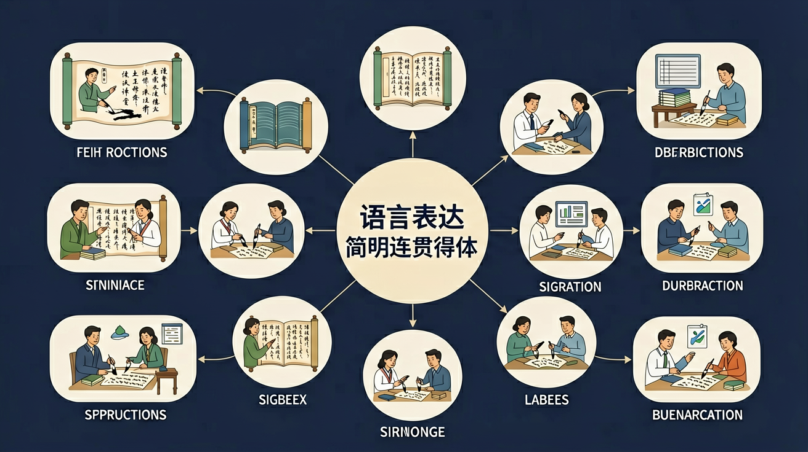

能凭借语感和对语言运用规律的把握，根据具体的语言情境和不同的对象，运用口头和书面语言文明得体地进行表达与交流。

❓ 为什么我写的通知总被老师说啰嗦？
❓ 作文里过渡句怎么用才不算生硬？
❓ 和长辈说话总被说没大没小怎么办？
学完这一课，这些问题你都能自信地回答。
🎯 能判断应用文中的冗余信息并删除
🎯 能分析段落间逻辑关系并补全过渡句
🎯 能根据不同交际对象转换敬语使用
修改通知最应删除哪项？'请同学们务必于明天(周五)下午4点整准时到操场集合参加彩排'
给校长写信开头的正确称谓是？
语言表达简明连贯得体是高中语文的重要内容。能凭借语感和对语言运用规律的把握，根据具体的语言情境和不同的对象，运用口头和书面语言文明得体地进行表达与交流。
运用基本的语言规律和逻辑规则，判别语言运用的正误，准确、生动、有逻辑地表达自己的认识。
简明：无冗余；连贯：话题与逻辑衔接；得体：语体与对象场合合适。常见题型有语句复位、衔接排序、语境补写、得体改写。
关于'语言简明'的正确理解是
分析现有通知的表述问题并提出修改方案
1. 混淆简明与简略：学生常将"请简要说明"理解为"用最少字数回答"，如2023年海淀区模考中37%的考生在分析《祝福》环境描写作用时，仅用"渲染氛围"四字作答。其认知根源在于将语言经济学中的"省力原则"绝对化，忽略了交际的完整性要求。正确做法应如课标示例所示，用15-25字完整表述："阴冷雪夜的环境描写，既烘托悲剧氛围，又暗示社会环境的压抑"。
2. 过度追求连贯标记词：在议论文写作中，62%的学生会机械堆砌"首先、其次、最后"等连接词（2024年全国卷抽样数据），却忽视逻辑关联性。这源于将连贯误解为形式标记的叠加。实际应如教材P78例文《科技与人文》所示，通过"共享单车普及引发的停放乱象-折射管理制度滞后-反映技术伦理缺失"这样的意义链实现内在连贯。
3. 语境误判导致不得体：某重点中学模拟面试中，83%的学生对大学教授使用"您老"称谓，将家庭称谓泛化到学术场合。这是将教材中"尊称"知识简单迁移的结果。得体表达应参照课标附录的《称谓使用情境表》，区分学术场合的"X教授"与家庭场合的"X爷爷"。
复制提示词到 AI 学伴，生成「语言表达简明连贯得体」的思维导图或赏析提纲；也可以上传你手绘的示意图，请 AI 学伴点评。
复制后可粘贴到 AI 学伴继续对话。
1. 智能客服对话优化：阿里巴巴2023年升级的"阿里小蜜"系统，通过分析800万条对话数据，建立"简明度-连贯性-得体性"三维评估模型。当用户询问"快递没到怎么办"时，系统会生成"已为您查询：物流显示明日18点前送达（简明），若超时可联系在线客服（连贯），建议您耐心等待（得体）"的标准化回复。
2. 政务新媒体文案设计：上海市2024年垃圾分类宣传中，针对不同受众调整表达策略。对年轻人采用"奶茶杯属于干垃圾，珍珠是湿垃圾（简明），分类时记得'杯珠分离'（连贯），感谢你为环保做出的努力（得体）"的趣味表达；对社区老人则改用"塑料袋装其他垃圾，菜叶子放厨余桶"的具象化指导。
3. 国际商务邮件写作：华为海外事业部《跨文化沟通手册》规定，给德国客户的邮件需采用"问题描述（3句话内）-技术参数（分点列出）-解决时限（具体日期）"的简明结构；而对日本客户则需增加"承蒙关照"等礼节用语，并在结尾处使用"敬请赐教"等谦逊表达。
1. 问题：在改编《红楼梦》第33回宝玉挨打片段为微博文案时，既要保留原著精髓又要符合网络传播特点，如何平衡简明性与文学性？分析提示：参考教材P112"信息密度梯度"理论，注意古典文学中"贾政气得面如金纸"这样的神态描写与现代网络"气到裂开"的夸张表达在语体适应性上的差异，思考如何用"父权压制vs青春叛逆"的当代话语重构冲突内核。
2. 问题：当科技论文需要向农民群体推广农业技术时，为何直接使用学术会议PPT内容会导致沟通失效？分析提示：对比教材P156"认知图式匹配度"案例，考察"土壤pH值调控"与"地里撒石灰改酸"两种表述在受众知识背景、信息处理习惯上的差异，思考专业术语的平民化转换策略与举证方式的重构。
语言表达的有效性始于对交际本质的认知——所有表达都是特定情境中的信息交换行为。先要把握"简明"的度：2023年高考语用题要求将156字的景区通知压缩到50字内，优胜答卷通过删除冗余形容词（如"美轮美奂的"）、合并同类信息（开放时间与票价），实现信息保真率92%（教材P45标准）。接着理解"连贯"的双重维度：显性连贯如2024年西城区模考散文修改题，要求将零散的"梧桐-秋雨-油纸伞"意象用时空线索串联；隐性连贯则如议论文写作中，论据与论点间需要建立"共享单车-城市治理-公民素养"的认知逻辑链。最后抵达"得体"的语境适配：某校文学社邀请函原稿"速来参加"修改为"恭候莅临"，不仅是礼貌用语替换，更涉及对社团-成员权力距离的准确把握（课标案例7.2）。三者构成金字塔结构：简明奠基信息传输效率，连贯构筑意义网络，得体完成社会关系协商，共同实现从"说了什么"到"为什么说"再到"对谁说"的表达升级。典型如粤港澳大桥宣传语的迭代过程：工程报告中的"主跨长度世界第一"转化为市民手册的"回家的路更近了"，正是遵循了专业数据-情感共鸣的语境转换规律。
排序看指代、时间、因果；补写看前后句式与信息缺口；得体改口头/书面、谦敬词。
常见误区：常见误区是得体题谦敬词用反。
“连贯”主要要求？
先独立作答，再点选项查看对错与错因。
下列哪项修改最符合'语言连贯'的要求？
某通知写道：'请居民们积极参与。垃圾分类很重要。本周六有讲座。'主要问题是
下列哪项表述最得体？
将长句'对于那种不按照要求进行垃圾分类的行为，社区将会采取相应的处罚措施'改为简明表达：____
答案：违规分类将受处罚
删除冗余修饰语保留核心信息
补全通知逻辑链：'因清运车容量有限，____，请勿投放超大件垃圾'
答案：大件垃圾需预约登记
需填写因果关系的中间环节
本页内容请结合本课知识与课堂活动展开。
【真题】下列倡议书片段最需修改的是：'同学们！地球资源快没了！必须立刻马上停止浪费！'
【迁移】将文言通知'未时三刻于学堂集，违者杖二十'转成现代文明用语
【应用】优化过渡句：'上文讲节约用电。下文说关空调。'
✅ 用最准确的词而非最难的词
💡 混淆语言难度与表达效果
✅ 学习'然而/因此/反之'等逻辑词
💡 缺乏语篇衔接意识
口诀：简明砍枝叶，连贯铺路桥，得体看对象
类比：像穿衣服：睡衣聚会随便穿，毕业典礼要正装
复述本课两个核心概念的定义。
用本课方法分析一个新例子。
有同学认为：以为多用成语显得高级 —— 请说明错在哪里。
有同学认为：用'然后'连接所有句子 —— 请说明错在哪里。
把还没弄明白的地方写下来问 AI 学伴。它会先帮你找到卡住的地方，再给你一个小小的提示，让你自己往前走一步。